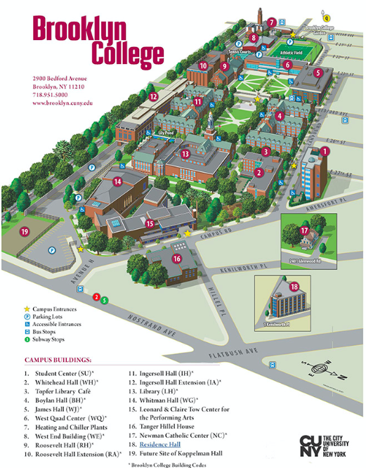

MIDWOOD — Sen. Bernie Sanders announced Saturday evening he’ll come to Brooklyn at almost the same time the city’s mayor, Bill de Blasio, was giving a speech in Iowa.
Sanders will hold his first campaign rally on Brooklyn College’s (CUNY) campus at 2900 Bedford Ave., in Midwood. The event will be held on Saturday, March 2, outside in the open air quad, behind the campus’ library at 11:30 am. Doors open at 10:00 am.
The two-time presidential candidate is the second 2020 Democratic hopeful to come to Brooklyn. Pete Buttigieg dropped in last week.
Sanders joined the crowded race for president last Tuesday, making the announcement on his hometown radio station in Vermont. Within 24 hours of his declaration, Sanders raised $5.9 million with more than 225,000 donors, according to a New York Times article.
The 77-year-old is a Kings County native and attended Brooklyn College for a year after graduating from James Madison High School—the same high school Sen. Chuck Schumer attended. Sanders was the keynote speaker during the college’s 2017 commencement.
During Sanders’ 2016 primary run, he opened campaign office’s in Gowanus and Flatbush. But the progressive lost the borough by a 20 percent margin to his then-opponent Hillary Clinton. Sanders also underperformed in the 9th Congressional District (Park Slope to Sheepshead Bay), losing to Hillary by more than 28,000 votes.
In Midwood—where the college is located—Sanders fared better. The Vermont senator came within 12 percent of Hillary’s win, losing by 428 votes.
Here’s a map of the college. The field is located between Ingersoll and Boylan Halls. Planners advised arriving early.
Meanwhile, in Iowa, Mayor de Blasio called the prospect of a presidential run, “a very personal reality.” De Blasio has repeatedly said he’s not ruling out a run for president. He canceled plans to New Hampshire—another stop on a presidential campaign trail—after the death of Det. Simonsen.